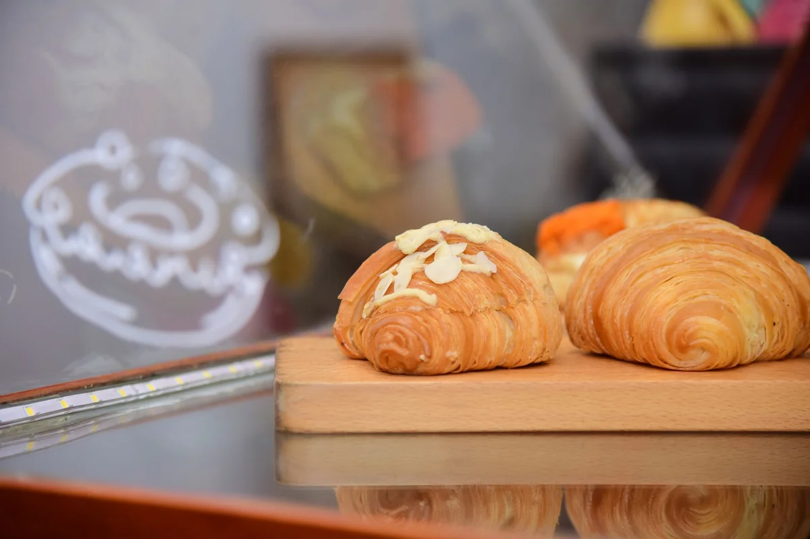
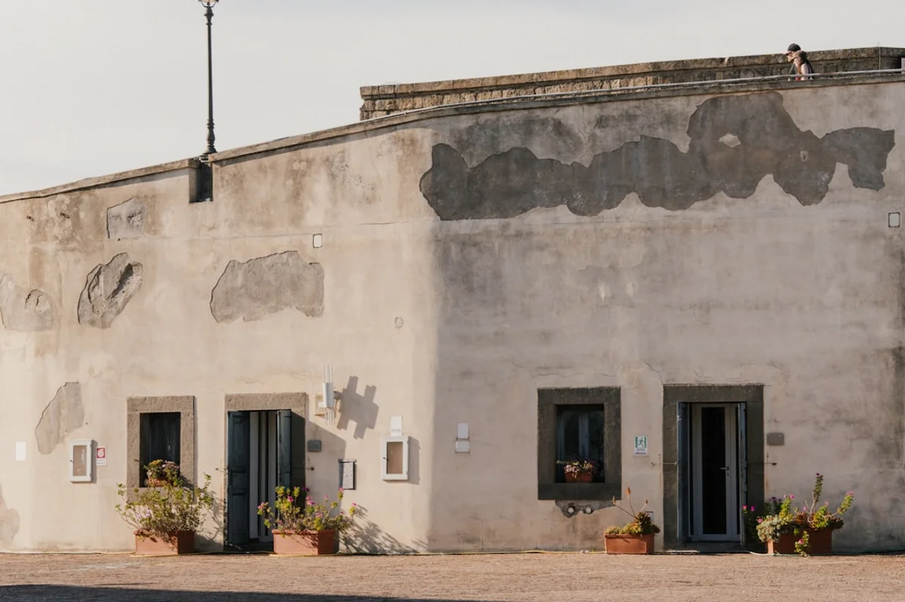

Introduction
Few pastries carry as much civic weight as the sfogliatella in Naples. For locals, it is not simply something to eat on the way to work; it is a ritual, a marker of identity, and a direct thread back to monastic kitchens operating more than three centuries ago. So when word spread that Pintauro, the most storied sfogliatella address in the city, had quietly reopened its doors on Via Toledo, the reaction was something closer to collective relief than ordinary excitement.
The Naples sfogliatella history and Pintauro's role in it cannot be separated. The shop dates to 1785, which means it has been selling these ridged, shell-shaped pastries through revolutions, wars, and the entire modern history of unified Italy. Its closure in recent years had left a gap that no amount of perfectly decent competitors could fill. The reopening, confirmed in 2024 and greeted with lines stretching down one of Naples' busiest pedestrian streets, has reignited a wider conversation about what authentic Neapolitan food culture actually means in an era of mass tourism and viral food content.
This is the full story: where the sfogliatella came from, what makes Pintauro different from every other pastry counter in the city, and why, if Naples is on any itinerary at all, this particular stop should be treated as non-negotiable.
The Convent Kitchen Where It All Started
The sfogliatella was not invented in a pastry shop. It was invented by nuns. The precise location was the Convent of Santa Rosa in Conca dei Marini, a small coastal town on the Amalfi Coast, sometime in the early 1700s. The story, which has been repeated so many times it has taken on the texture of legend, goes like this: a nun found herself with leftover semolina that had been soaked in wine and lemon. Rather than discard it, she folded it inside two sheets of pasta dough, added dried fruit and sugar, and shaped the whole thing into something resembling a monk's hood. The result was the sfogliatella Santa Rosa, still made today in Conca dei Marini and distinguishable from its Neapolitan descendants by a dollop of pastry cream and a sour cherry on top.
The pastry migrated to Naples in the early 19th century when a pastry chef named Pasquale Pintauro got hold of the recipe, presumably through contacts with the convent, and began adapting it for urban street consumption. His key innovation was structural. He replaced the soft, brioche-adjacent dough with an impossibly thin, laminated pastry that shattered on contact and left a cascade of flakes down the front of whatever one happened to be wearing. This version became the sfogliatella riccia, and it is the version most people picture when they hear the word sfogliatella today.
What Pintauro understood, which the convent nuns arguably did not need to think about, was the psychology of street food. A pastry that is dramatic to eat, that makes noise and creates a small visual spectacle, will sell more than one that sits quietly on a plate. The sfogliatella riccia was engineered, more or less deliberately, to be an experience as much as a food.
Sfogliatella Riccia vs Sfogliatella Frolla: Know What You Are Ordering
Anyone standing at a Neapolitan pastry counter for the first time will quickly encounter a choice that is rarely explained clearly. The sfogliatella comes in two distinct versions, and they are genuinely different pastries.
Sfogliatella riccia (literally 'curly sfogliatella') is the laminated shell with the jagged, layered exterior. The dough is rolled out to near translucency, brushed with lard, rolled, sliced, pressed into the characteristic cone shape, and filled with a mixture of ricotta, semolina, eggs, sugar, candied citrus peel, and cinnamon. It is baked at high heat and served warm. The contrast between the shattering crust and the dense, gently sweet filling is the defining sensory experience of Neapolitan street pastry.
Sfogliatella frolla is the same filling encased in a short, crumbly pastry shell, similar in texture to a good shortbread. It is softer, less dramatic, considerably less messy, and favoured by people who would rather not dust their shirt in pastry flakes before a business meeting. In Naples, ordering the frolla is not considered inferior; it is simply a different preference. Both are traditional.
A third version, the coda d'aragosta (lobster tail), is sometimes grouped with sfogliatella variants even though it uses puff pastry rather than laminated dough and typically contains a cream filling rather than ricotta. It originated in the United States among Neapolitan immigrants and only later returned to Italy, which makes it one of the more interesting examples of culinary reverse migration in the Italian-American food story.
At Pintauro, the riccia is the undisputed star. The frolla is available but the shop built its reputation on the laminated version, and that is what the queues are for.

What Pintauro Is and Why the Reopening Matters
Pintauro on Via Toledo is not the only place in Naples selling sfogliatella. It is not even the only good place. Attanasio near the central train station has devoted fans who argue its version is superior. Scaturchio in Piazza San Domenico Maggiore has been making Neapolitan pastries since 1905 and has never closed. Several anonymous street-corner bars in the Quartieri Spagnoli turn out a perfectly respectable riccia every morning.
But Pintauro occupies a category of its own because of what it represents institutionally. It is the direct commercial descendant of Pasquale Pintauro's original 1785 shop. When it was open, buying a sfogliatella there was not just a transaction; it was a point of contact with the specific moment the pastry entered urban Neapolitan life. When it closed, something irreplaceable went quiet. Not the pastry itself, which continued to exist everywhere, but the particular thread of continuity it embodied.
The 2024 reopening was accompanied by a significant renovation of the Via Toledo premises, which had become tired over the decades. The new interior is cleaner and more contemporary, a decision that generated some criticism from purists who felt the slightly worn, time-stained original was part of the atmosphere. This is a debate worth knowing about before visiting: the sfogliatella is the same; the room around it has changed. Whether that matters is a personal question, but it is a real one.
The Insider Angle: Why Timing Your Visit Changes Everything
Here is something that almost no travel guide mentions, because most guides are written by people who visited once at noon and stood in a reasonable queue. The sfogliatella at any serious Neapolitan pastry shop is a fundamentally different object depending on when it was pulled from the oven.
A sfogliatella riccia served within ten minutes of baking is a completely different experience from one that has been sitting in a display case for two hours. The laminated layers stay crisp and separate when hot; they compress into something approaching sogginess as they cool. The ricotta filling, dense when warm, takes on a slightly stodgy quality at room temperature. This is not a quality issue; it is physics. The pastry was designed to be eaten immediately.
The practical implication: the most serious sfogliatella consumers in Naples go early. Pintauro and most of the major sfogliatella specialists begin production before dawn, with the first batches ready between 7:00 and 8:00 in the morning. Arriving at 7:30 on a weekday means warm pastry, shorter queues, and the particular pleasure of eating something that is technically breakfast in a city that understands breakfast more seriously than almost anywhere else in Europe.
Arriving at 11:00 during tourist season means a longer wait for a pastry that may have been out of the oven for ninety minutes. It will still be good. But it will not be the same thing.
A second tip that applies specifically to Pintauro's Via Toledo location: the shop sits on one of Naples' main pedestrian arteries, which means foot traffic is constant. The queues move faster than they look because the operation inside is extremely efficient. Do not be discouraged by the line visible from the street.

Prices, Practical Details and Getting There
Via Toledo is one of the most accessible streets in central Naples, running directly from Piazza Dante toward the waterfront. Pintauro sits roughly midway along the street, at number 275. It is reachable on foot from virtually every major hotel in the centro storico, from the port, and from the central train station (about 15 to 20 minutes walking).
For public transport, the Toledo stop on Line 1 of the Naples Metro puts visitors directly on the street. The station itself is worth a few minutes of attention before or after the pastry stop; it was designed by architect Oscar Tusquets and is consistently ranked among the most beautiful metro stations in the world.
Current pricing (as of 2024) puts a single sfogliatella riccia at Pintauro at approximately 1.20 to 1.50 euros, depending on size. This is broadly consistent with sfogliatella prices across Naples, though airport and hotel district vendors charge considerably more. Eating it standing at the counter or on the street outside is the standard approach; there is no table service and no reason to want it.
Opening hours post-renovation run from approximately 7:30 to 20:00 on weekdays and 7:30 to 14:00 on Sundays, though these hours should be verified directly with the shop as they are subject to seasonal adjustment. The shop is closed on Mondays.
Payment is cash only at the traditional counter, a detail worth knowing before joining the queue.
The Sfogliatella in the Wider Story of Neapolitan Pastry
The sfogliatella is the most internationally recognisable Neapolitan pastry, but it exists within a tradition that is far broader and arguably underappreciated outside Italy. Understanding where it sits helps explain why Pintauro's return resonated beyond food media circles.
Neapolitan pastry culture draws heavily on two sources: the convent tradition, which produced technically complex, heavily spiced sweets using expensive ingredients like ricotta, candied citrus, and cinnamon as a form of both religious devotion and institutional fundraising; and the street food tradition, which demanded speed, affordability, and sensory immediacy. The sfogliatella riccia is the point where these two traditions meet most visibly.
Other significant pastries in the same tradition include the pastiera napoletana, a lattice-topped tart of wheat berries, ricotta, and orange blossom water traditionally made for Easter; the struffoli, fried honey-glazed dough balls served at Christmas; and the zeppole di San Giuseppe, fried or baked choux pastry rings filled with custard and topped with sour cherries, eaten on 19 March for the feast of Saint Joseph. Each of these has a specific liturgical calendar association, which reflects how deeply Neapolitan pastry is embedded in the religious and civic life of the city rather than existing purely as a commercial product.
The sfogliatella is unusual in this context because it shed its original convent associations fairly quickly and became a year-round, entirely secular street food. It is the Neapolitan pastry that travels most easily, both physically (it survives a few hours in a bag reasonably well if fresh) and culturally. Versions appear in pastry shops across the Italian diaspora from New York to Buenos Aires, and their quality ranges from extraordinary to deeply mediocre. The real thing, fresh from a serious Neapolitan producer, is a useful calibration point for understanding the gap.
Final Thoughts
The reopening of Pintauro is genuinely good news, not in the inflated sense of food media announcements, but in the quiet, specific sense that a 239-year-old institution has resumed doing what it was always meant to do. The sfogliatella was not in danger. It will outlast all of us. But having the original commercial home of the riccia version back on Via Toledo closes a loop in the story that had been left irritatingly open.
For anyone planning a visit to Naples, the calculus is simple: go to Pintauro in the morning, order the riccia, eat it standing up on Via Toledo while it is still warm enough to steam, and understand that this is one of those experiences that no amount of photographs adequately prepares a person for. The flakes will go everywhere. That is entirely the point.
If this piece helped clarify the history or the visit, sharing it with someone who is heading to Naples, or who simply loves a good pastry story, would be genuinely appreciated.
Frequently Asked Questions
What is the history of sfogliatella in Naples?
Sfogliatella was created in the early 1700s by nuns at the Convent of Santa Rosa in Conca dei Marini on the Amalfi Coast. The original version, called sfogliatella Santa Rosa, was brought to Naples in the early 19th century by pastry chef Pasquale Pintauro, who adapted the recipe using a laminated dough to create the sfogliatella riccia. Pintauro opened his shop on Via Toledo in 1785 and is credited with making sfogliatella one of the defining street foods of Neapolitan culture.
Has Pintauro in Naples reopened?
Yes. Pintauro on Via Toledo 275 in Naples reopened in 2024 following a period of closure and renovation. The reopening was accompanied by an interior redesign and was met with significant public interest, including queues on Via Toledo. Opening hours are approximately 7:30 to 20:00 on weekdays and 7:30 to 14:00 on Sundays, with closure on Mondays.
What is the difference between sfogliatella riccia and sfogliatella frolla?
Sfogliatella riccia has a laminated, multi-layered shell made from very thin pastry dough brushed with lard, giving it a crisp, flaky, shell-shaped exterior. Sfogliatella frolla uses the same ricotta and semolina filling but is encased in a softer, crumbly short pastry. Both are traditional and widely available in Naples. The riccia is generally considered the more iconic and technically demanding version.
How much does a sfogliatella cost in Naples?
At most serious Neapolitan pastry shops including Pintauro, a sfogliatella riccia costs between 1.20 and 1.50 euros as of 2024. Prices are higher at airport vendors, hotel district cafes, and tourist-facing establishments, where 2.50 to 3.50 euros is common.
What is the best time to eat sfogliatella in Naples?
Early morning, ideally between 7:30 and 9:00, when the first batches come fresh from the oven. Sfogliatella riccia is at its best within minutes of baking, when the layered crust is fully crisp and the filling is warm. Pastries that have cooled in a display case for more than an hour lose the textural contrast that defines the experience.
Where else in Naples can you eat a good sfogliatella besides Pintauro?
Attanasio near Naples Centrale train station is widely praised and operates from early morning. Scaturchio in Piazza San Domenico Maggiore in the historic centre has been producing Neapolitan pastries since 1905. Many neighbourhood bars in the Quartieri Spagnoli and Spaccanapoli area also serve freshly made sfogliatella. All three are reliable alternatives when Pintauro has a long queue or is closed.